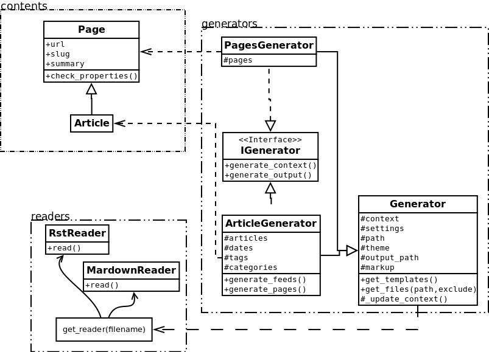

关于 Pelican 的一些历史¶
Warning
This page comes from a report the original author (Alexis Métaireau) wrote right after writing Pelican, in December 2010. The information may not be up-to-date.
Pelican is a simple static blog generator. It parses markup files (Markdown or reStructuredText for now) and generates an HTML folder with all the files in it. I’ve chosen to use Python to implement Pelican because it seemed to be simple and to fit to my needs. I did not wanted to define a class for each thing, but still wanted to keep my things loosely coupled. It turns out that it was exactly what I wanted. From time to time, thanks to the feedback of some users, it took me a very few time to provide fixes on it. So far, I’ve re-factored the Pelican code by two times; each time took less than 30 minutes.
Use case¶
I was previously using WordPress, a solution you can host on a web server to manage your blog. Most of the time, I prefer using markup languages such as Markdown or reStructuredText to type my articles. To do so, I use vim. I think it is important to let the people choose the tool they want to write the articles. In my opinion, a blog manager should just allow you to take any kind of input and transform it to a weblog. That’s what Pelican does. You can write your articles using the tool you want, and the markup language you want, and then generate a static HTML weblog.

To be flexible enough, Pelican has template support, so you can easily write your own themes if you want to.
Design process¶
Pelican came from a need I have. I started by creating a single file application, and I have make it grow to support what it does by now. To start, I wrote a piece of documentation about what I wanted to do. Then, I created the content I wanted to parse (the reStructuredText files) and started experimenting with the code. Pelican was 200 lines long and contained almost ten functions and one class when it was first usable.
I have been facing different problems all over the time and wanted to add features to Pelican while using it. The first change I have done was to add the support of a settings file. It is possible to pass the options to the command line, but can be tedious if there is a lot of them. In the same way, I have added the support of different things over time: Atom feeds, multiple themes, multiple markup support, etc. At some point, it appears that the “only one file” mantra was not good enough for Pelican, so I decided to rework a bit all that, and split this in multiple different files.
I’ve separated the logic in different classes and concepts:
- writers are responsible of all the writing process of the files. They are responsible of writing .html files, RSS feeds and so on. Since those operations are commonly used, the object is created once, and then passed to the generators.
- readers are used to read from various formats (Markdown and reStructuredText for now, but the system is extensible). Given a file, they return metadata (author, tags, category, etc) and content (HTML formatted).
- generators generate the different outputs. For instance, Pelican comes with an ArticlesGenerator and PagesGenerator, into others. Given a configuration, they can do whatever you want them to do. Most of the time it’s generating files from inputs (user inputs and files).
I also deal with contents objects. They can be Articles, Pages, Quotes, or whatever you want. They are defined in the contents.py module and represent some content to be used by the program.
In more detail¶
Here is an overview of the classes involved in Pelican.
The interface does not really exist, and I have added it only to clarify the whole picture. I do use duck typing and not interfaces.
Internally, the following process is followed:
- First of all, the command line is parsed, and some content from the user is used to initialize the different generator objects.
- A context is created. It contains the settings from the command line and a settings file if provided.
- The generate_context method of each generator is called, updating the context.
- The writer is created and given to the generate_output method of each generator.
I make two calls because it is important that when the output is generated by the generators, the context will not change. In other words, the first method generate_context should modify the context, whereas the second generate_output method should not.
Then, it is up to the generators to do what the want, in the generate_context and generate_content method. Taking the ArticlesGenerator class will help to understand some others concepts. Here is what happens when calling the generate_context method:
- Read the folder “path”, looking for restructured text files, load each of them, and construct a content object (Article) with it. To do so, use Reader objects.
- Update the context with all those articles.
Then, the generate_content method uses the context and the writer to generate the wanted output.